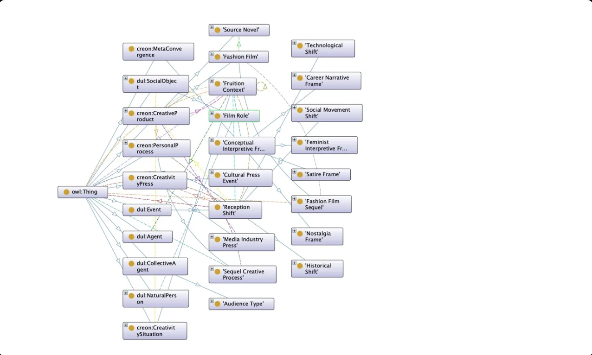
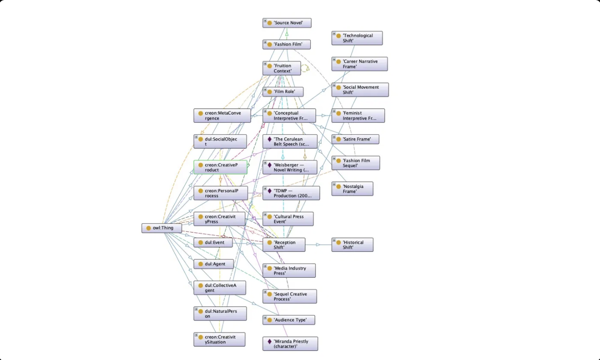
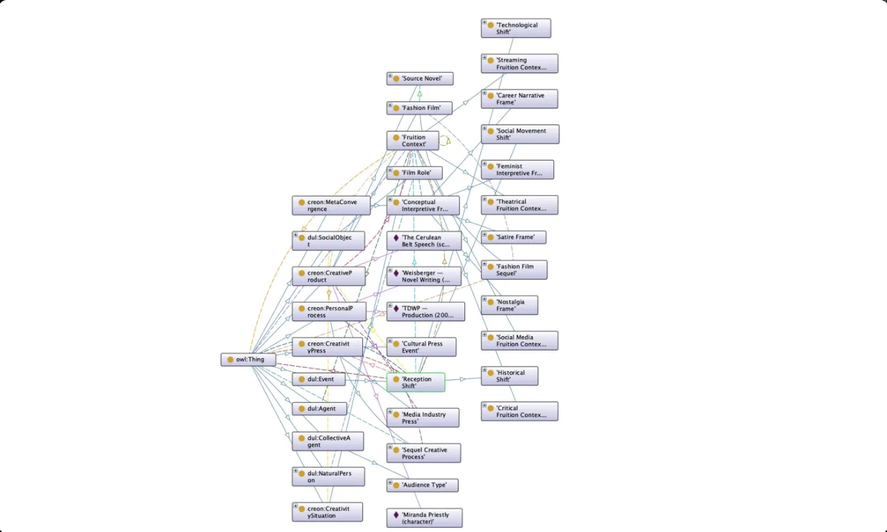

Modeling fashion film creativity across The Devil Wears Prada (2006–2026) using the CreOn OWL2 ontology.
This project extends CreOn — an integrated OWL2 ontology of creativity theories — by applying it to a concrete cultural artifact: the two Devil Wears Prada films, separated by twenty years.
The core contribution is the modeling of opera aperta and fruition: how the same CreativeProduct acquires different meanings across different reception contexts, driven by changes in CreativityPress.
We introduce four new classes — FruitionContext, ReceptionShift, MediaIndustryPress, and SequelProcess — directly addressing open questions in the CreOn research agenda.
David Frankel and Aline Brosh McKenna produced both films. In 2004, they worked within print-era Hollywood on a $35M budget. In 2024, the same agents returned to a $100M sequel in the streaming age, with the film itself explicitly addressing the death of print media. The PersonalProcess is structurally identical — but the CreativityPress transformed everything.
The 2006 film became a cultural phenomenon: it shaped fashion journalism's public image, made 'cerulean' a global reference, and turned Miranda Priestly into an archetype. When the sequel launched in 2026, audiences did not arrive with clean eyes — they brought twenty years of memes, reruns, and commentary. The original CreativeProduct's meaning had already shifted before the sequel existed.
Audiences in 2006 read TDWP as a story about ambition and its cost. After #MeToo in 2017, the same film was reread through the lens of workplace abuse. In 2026, after the streaming sequel, the original became a nostalgic document of a vanished media world. The film did not change — its FruitionContexts did. This is opera aperta: the CreativeProduct is ontologically stable; its interpretive valence is not.
Each CQ translates directly into a SPARQL unit test against the populated knowledge graph.
| ID | Competency Question | Type |
|---|---|---|
| CQ1 | Who are the agents of the PersonalProcess that produced TDWP (2006)? | Positive |
| CQ2 | Which agents participated in both the 2006 and 2026 productions? | Positive |
| CQ3 | What CreativityPress contexts are associated with each film's production? | Positive |
| CQ4 | How many FruitionContexts does the 2006 film have? | Positive |
| CQ5 | What interpretive frames are applied to the 2006 film, and in which years? | Positive |
| CQ6 | Does the fashion industry function as social domain for both creativity situations? | Positive |
| CQ7 | What press change triggered each reception shift on the 2006 film? | Positive |
| NCQ1 | Is a cultural reinterpretation (e.g. post-#MeToo reading) itself a new CreativeProduct? | Negative |
| NCQ2 | Is the streaming platform (Disney+) a PersonalProcess agent? | Negative |
| NCQ3 | Is the 2026 film's $100M budget a CreativeProduct? | Negative |
Interactive force-directed graph of the CreOn-TDWP ontology. Click nodes to inspect, drag to rearrange, scroll to zoom. Toggle between T-Box (classes) and A-Box (individuals) views.



The visual world of the two films — fashion, power, media, and the twenty-year shift in aesthetic language.
Key individuals in the knowledge graph — each card is a named instance in the ontology.